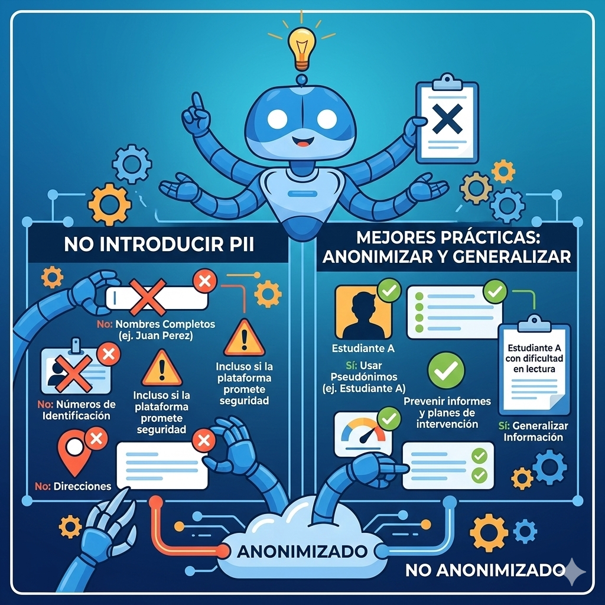
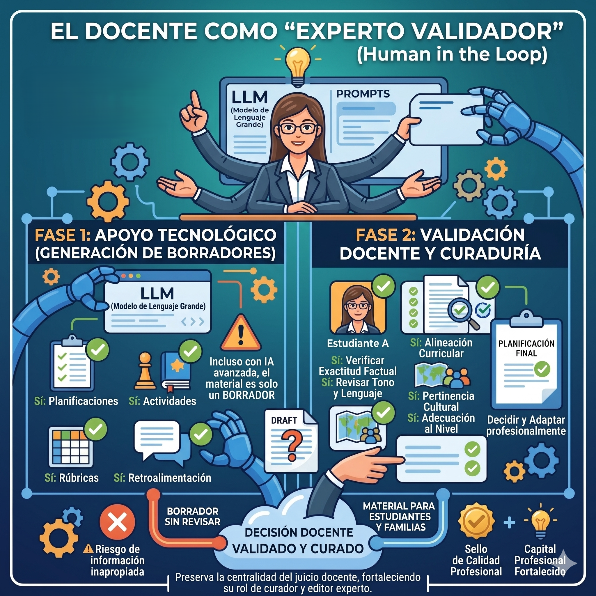

Lección 1.3: Ética, seguridad y responsabilidad (el “Human in the Loop”)
Marco legal básico: privacidad de datos estudiantiles

Al usar aplicaciones basadas en LLM en contextos educativos, uno de los puntos más sensibles es la protección de la información personal identificable (PII) de los estudiantes. En Estados Unidos, la normativa clave es la Family Educational Rights and Privacy Act (FERPA), que protege los expedientes educativos y regula quién puede acceder a ellos y con qué fines. La discusión sobre privacidad en entornos digitales es crítica; Im y Chee (2012) advierten sobre la importancia de proteger la identidad de los sujetos en investigaciones y prácticas mediadas por internet, principio aplicable al manejo de datos estudiantiles en plataformas de IA.
Desde la perspectiva docente, esto implica que:
- 🔒 No se deben introducir en bots, asistentes o formularios que usen LLM nombres completos de estudiantes, números de identificación, direcciones u otra PII cuando se redactan informes, comentarios o planes de intervención.
- 🔒 Es preferible anonimizar o generalizar la información (por ejemplo, “Estudiante A con dificultad en lectura” en lugar de nombre y apellido), incluso cuando la plataforma promete cumplir estándares de seguridad.
En Puerto Rico, además de FERPA, el Departamento de Educación emite cartas circulares y reglamentos que regulan el manejo de expedientes y datos digitales de estudiantes; estas políticas suelen exigir confidencialidad, uso de canales institucionales y protección contra accesos no autorizados. Para los LLM, esto se traduce en que deben verse como herramientas de redacción y apoyo, no como repositorios de datos sensibles.
Sesgos algorítmicos y dependencia tecnológica
La investigación en ética de IA ha mostrado que los LLM pueden reproducir sesgos presentes en los datos con los que fueron entrenados, lo que puede reflejar estereotipos de género, raza, idioma o contexto socioeconómico (Russell & Norvig, 2020). En educación, esto puede aparecer en:
- Ejemplos que privilegian ciertas culturas o realidades.
- Respuestas que minimizan o distorsionan experiencias de minorías.
- Sugerencias de actividades que no encajan en el contexto local de la escuela.
Sesgos y Dependencia
Sesgo Algorítmico
Presencia de errores sistemáticos o resultados desbalanceados en las salidas de un sistema automatizado (como un LLM) que generan efectos injustos o discriminatorios hacia ciertos grupos, producto de datos de entrenamiento sesgados o decisiones de diseño del algoritmo.
Dependencia Tecnológica
Grado en que una persona, grupo u organización requiere del uso continuo de tecnologías digitales para ejecutar tareas básicas, hasta el punto de ver mermadas su autonomía, juicio o desempeño cuando dichas tecnologías no están disponibles.
Existe el riesgo de dependencia tecnológica, en la que el docente delega cada vez más la creatividad y el juicio pedagógico al sistema. Hargreaves y Fullan (2012) discuten la importancia del capital profesional y advierten contra la erosión de la autonomía docente si las herramientas externas reemplazan el juicio experto en lugar de aumentarlo. Valli y Zafiropoulos (2024) añaden que la aceptación de estas herramientas depende de su utilidad percibida, pero debe equilibrarse para evitar una confianza ciega en la automatización.
Las instituciones deben formar a los docentes en:
- ✅ Reconocer posibles sesgos en las respuestas de la IA.
- ✅ Contrastar con fuentes diversas y con la realidad del estudiantado.
- ✅ Mantener un uso crítico y consciente, evitando la sustitución total de la reflexión pedagógica por sugerencias automáticas.
El Docente como “experto validador” (Human in the Loop)

Muchos marcos actuales de uso responsable de IA en educación promueven el modelo de 'human in the loop' (Alhalthli et al., 2025; Seufert et al., 2022), donde la tecnología asume tareas de apoyo, pero la decisión final recae siempre en la persona profesional. En el caso de los LLM, esto significa que el maestro cooperador:
- 📝 Genera borradores: Usa bots y asistentes basados en LLM para generar borradores de planificaciones, actividades, rúbricas o retroalimentación.
- 🔍 Revisa cuidadosamente el contenido: Exactitud factual, alineación curricular, pertinencia cultural, adecuación al nivel del grupo, tono y lenguaje.
- 🎯 Decide y adapta: Corrige, adapta o descarta según su criterio profesional, antes de que ese material llegue a estudiantes, familias o documentos oficiales.
En términos pedagógicos, el rol del maestro pasa de ser solo “productor desde cero” a ser curador y editor experto, que sabe formular buenas solicitudes (prompts), evaluar el resultado y decidir qué se incorpora y qué no. Esto preserva la centralidad del juicio docente, fortaleciendo su capital profesional (Hargreaves & Fullan, 2012), y reduce el riesgo de que “salga del LLM” información no verificada o inapropiada para el contexto escolar.
¡Felicidades!
Has culminado la lección 1.3 del programa de formación profesional.
Al completar el contenido 1.3 has dado un paso crucial: no solo comprendes lo que los LLM pueden hacer, sino también lo que no deben hacer en términos de privacidad, sesgos y responsabilidad profesional. Este marco ético fortalece tu rol como docente, porque te permite integrar la IA con mayor seguridad, defendiendo siempre la confidencialidad de tus estudiantes y la calidad de tus decisiones pedagógicas.
🎉 Checkpoint de Saberes
Para cerrar este bloque, te invito a realizar el Checkpoint de Saberes, una evaluación formativa breve y no punitiva centrada en tres ejes: privacidad de datos estudiantiles, sesgos y dependencia tecnológica, y el rol del docente como “Human in the Loop”.
Referencias de la Lección
- • Hargreaves, A., & Fullan, M. (2012). Professional capital: Transforming teaching in every school. Teachers College Press.
- • Russell, S. J., & Norvig, P. (2020). Artificial intelligence: A modern approach (4th ed.). Pearson.
- • Valli, P., & Zafiropoulos, K. (2024). Factors that affect the acceptance of educational AI tools by teachers. Education and Information Technologies, 29, 123–145.